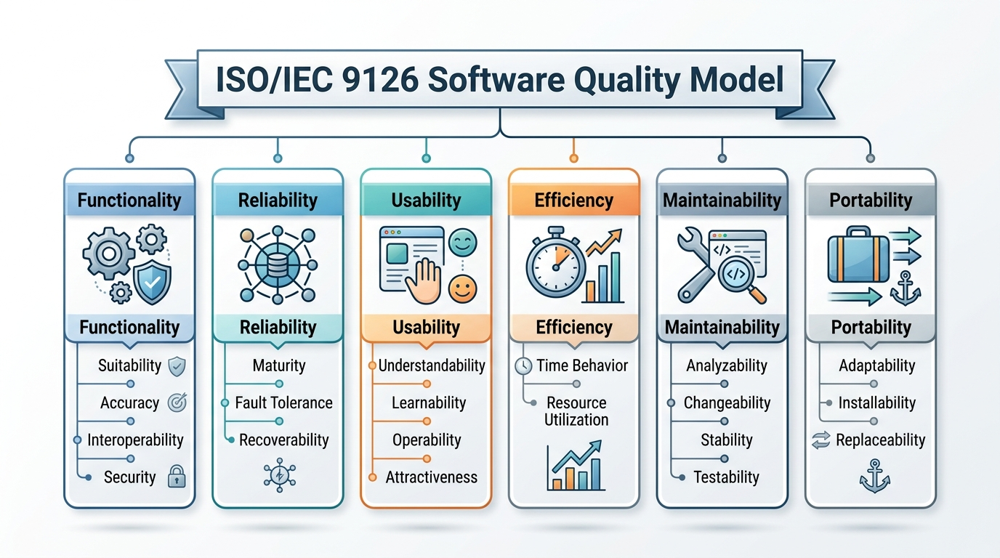
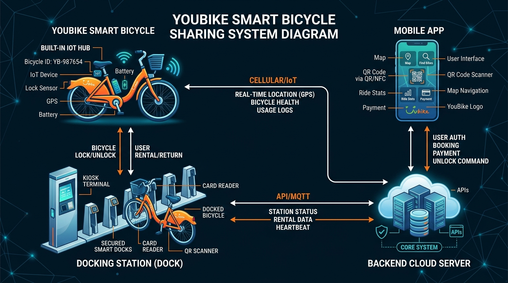

授課教授：薛念林 教授 (與 Gemini AI 協作) 資訊工程學系 逢甲大學
隨堂投票與小組討論：
第一次軟體工程會議在何時召開？
A. 1928
B. 1968
C. 1948
D. 1988
為何 1968 年的軟體危機無法僅透過採購運算速度更快的超級電腦或擴充硬體記憶體來解決？
A. 危機是由 1960 年代後期的硬體製造延遲與矽晶片短缺所導致的。
B. 危機是管理系統複雜度的認知與組織失敗，更快的硬體只會放大這個問題。
C. 危機源於早期的程式語言缺乏基本的數學與計算功能。
D. 危機發生是因為早期大型主機與現代的分散式雲端架構不相容。
軟體 (IEEE 標準定義)： 與計算機系統運作相關的電腦程式、程序、以及可能伴隨的相關文件與資料。
根據 IEEE 標準對軟體的正式定義，以下哪一項不被視為軟體的組成部分？
A. 可執行的電腦程式與原始程式碼檔案。
B. 系統資料庫綱要與組態設定檔案。
C. CPU 處理器硬體與物理記憶體單元。
D. 軟體的安裝說明與系統部署程序。
雙人分組互動活動：

docker compose up
以下哪一個選項正確將真實世界的軟體問題與其對應的 ISO 9126 品質特徵進行了配對？
A. 資料庫查詢需要 15 秒才能回傳結果 Maintainability (Testability)
B. 當第三方 API 斷線時，系統發生崩潰 Reliability (Fault Tolerance)
C. 由於程式碼緊密耦合，開發人員難以撰寫單元測試 Portability (Adaptability)
D. 應用程式無法在新版本的 macOS 上運行 Usability (Operability)
品質權衡隨堂投票與小組討論：

現代智慧系統的多元領域分類：
軟體工程 (Software Engineering)：一門關於軟體生產所有階段的工程學科——從初始的需求規格書制定，直到系統上線後的維護與演進。
以下哪一個配對正確將特定的軟體工程動作與其對應的通用核心活動進行了對應？
A. 進行利害關係人訪談以撰寫使用者故事 Software Specification
B. 撰寫自動化單元測試以模擬資料庫回應 Software Design & Implementation
C. 重構資料庫綱要以改善查詢速度 Software Validation
D. 將第三方的付款 API 替換為新的金流閘道 Software Specification
小組案例情境分析討論：
專案目前落後進度 3 週，距離預定上線日僅剩 2 週。專案經理決定緊急招募 4 名新工程師來加速開發。根據布魯克斯法則（Brooks's Law），最可能發生的結果為何？
A. 專案將會提早 1 週順利上線。
B. 專案將會面臨更嚴重的延遲，因為資深開發人員必須停下工作來培訓與協調新進人員。
C. 新進人員的加入對專案時程完全沒有任何影響。
「Vibe Coding」的現場投票與討論：
** under the ACM/IEEE Code of Ethics, if an employer directs an engineer to implement an algorithm that falsifies safety compliance reports, what is the engineer's obligation?**
A. 順從雇主，因為雇主支付工程師的薪水。
B. 拒絕並向上陳報，因為公眾利益的優先權高於對雇主的忠誠。
C. 實作程式碼，但不要寫任何系統文件。
D. 將此程式碼外包給外部廠商開發以規避責任。
黑暗模式偵探活動：
檢測你對本章基礎概念的掌握度：